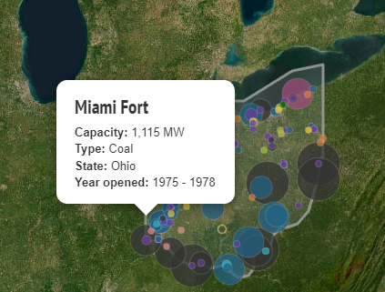

The purpose of this visualization is to visualize the sources of US electricity on a map, to be able to get a better understanding and detect patterns with US electricity.
The data includes each major electricity source in the US, categorized based on where the electricity comes from, such as Gas, Wind, Solar, Coal, Nuclear, etc.
It was collected by the US Energy Information Administration in July 2017, containing data up to May 2017.
This data only includes power plants with a combined capacity of 1 megawatt (MW) or above, including where several smaller units are located at a single site.
The expected user for this visualization is an American reading the news and thinks that this is an interesting topic.
This visualization is also very easily shown to government officials who can then make more informed policy decisions about electricity in the US.
What questions do people want to ask about this data?
How can they find the answers with this tool?
Users can discover insights such as the significant power generation capacity of nuclear power with only a few plants, predominant wind power in the middle of the country, and solar power concentrations in the southwest and southeast.
The color choices effectively correlate with common associations for each energy source, enhancing user understanding and interaction.
On the left side we get to see a chart of how much energy is being supplied for the given area for each energy type
Details on demand are also available to the user through hovering over a circle, it tells the user Capacity, Energy Type, State, and Year Opened
The visualization lacks the ability to display population density, which could affect the understanding of energy usage based on area density.
Enhancements could include scaling the representation of energy sources to reflect actual output and adding state borders for clearer geographical orientation.
Further considerations include projecting future trends, exploring the scarcity of nuclear plants despite their high output, and other strategic energy planning questions.